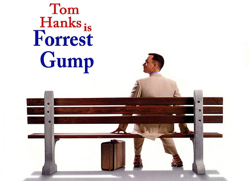

Le Film
Rappelez vous de l’histoire de Forrest Gump et regardez l’accueil que le film a reçu.
L'Histoire du Film
“Forrest Gump” est une adaptation d’un livre de Winston Groom qui suit la vie de Forrest Gump, un homme au quotient intellectuel limité mais qui va accomplir de grandes choses. L'histoire est racontée à travers les yeux de Forrest lui-même, et le récit se déroule de manière chronologique, couvrant plusieurs décennies.
Enfance et Adolescence (Années 1950)
Le film commence par l'enfance de Forrest en Alabama, où il fait face à des difficultés en raison de sa différence intellectuelle. Il devient ami avec Jenny Curran, qui devient quelqu’un d’important dans sa vie. Forrest découvre sa passion pour la course à pied, ce qui lui permet d'obtenir une bourse d'études universitaires.
L'Université et le Football (Années 1960)
Grâce à sa vitesse de course, Forrest devient une star du football à l'Université de l'Alabama, où il rencontre le président John F. Kennedy. Ensuite il rejoint l'armée américaine et sert au Vietnam, où il rencontre le lieutenant Dan Taylor et Bubba, son ami pêcheur de crevettes qui ne survivra pas à la guerre.
Retour à la vie civile (Années 1970)
Après la guerre, Forrest revient à la vie civile et retrouve Jenny, mais leurs chemins se séparent. Forrest découvre un talent pour le ping-pong et devient une star dans ce domaine et ira même jouer en Chine. Il utilise sa notoriété pour lancer une entreprise de crevettes pour son ami Bubba mort au combat.
Années 1980
Forrest est un homme d'affaires prospère, mais il n'a jamais oublié Jenny. Le film explore leur relation complexe alors qu'ils se retrouvent à des moments différents de leur vie. Ils se retrouvent pour une dernière fois où Jenny annonce que son enfant est aussi celui de Forrest et qu’elle est atteinte d’une grave maladie. Avant son décès, il prennent le temps de se marier puis essaie de rattraper le temps perdu. À sa mort, elle est enterrée au pied de l’arbre qu’ils fréquentaient enfants.
Années 1990
Forrest retourne en Alabama après la mort de sa mère. Le film se termine avec Forrest élevant son fils, qui part à l'école.
L'Accueil du Public et de la Critique
“Forrest Gump” a connu un immense succès à la fois auprès du public et de la critique.
Accueil du Public
Le film a été un énorme succès au box-office, devenant l'un des films les plus rentables de son époque. Le personnage de Forrest Gump est devenu un emblème, et le film a touché le cœur de nombreuses personnes grâce à son message de persévérance et de bienveillance.
Accueil de la critique
“Forrest Gump” a reçu des critiques très positives. Il a été loué pour sa narration passionnante, la performance de Tom Hanks dans le rôle-titre, les effets spéciaux novateurs qui ont permis au personnage de Forrest d'interagir avec des personnalités historiques, et sa bande originale mémorable. Le film a remporté plusieurs Oscars, dont celui du Meilleur Film, du Meilleur Réalisateur pour Robert Zemeckis et du Meilleur Acteur pour Tom Hanks.
En fin de compte, le film “Forrest Gump” est devenu iconique, apprécié pour sa capacité à captiver et toucher le public tout en explorant des thèmes profonds de l'histoire américaine et de philosophie de vie.